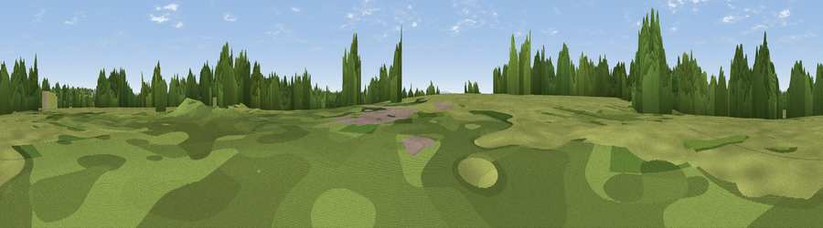

Forhill
#40467 in England · top 85% of its area beats it · near HawkesleyThe view, rendered

A 360° render of this exact spot computed from the terrain model, tree cover and land cover — summer colours, afternoon light, calibrated against photographs of famous viewpoints. Real trees, hedges and buildings will differ in detail.
The panorama
Grey silhouette: terrain skyline in each direction (720 bearings, Earth curvature and refraction included). Dashed green: skyline with trees (+15 m) and buildings (+8 m) as obstacles. Blue strip: how far the ground is visible on each bearing.
Where the view opens
Wedge length = distance to the farthest visible ground on that bearing (vegetation-aware). Rings at 10, 25 and 50 km.
What fills the view
56% grassland · 31% woodland · 7% cropland · 6% built-up
Angular shares of the visible panorama (visual magnitude), not map area. Landscape diversity 0.45 (0–1 Shannon).
Key numbers
More beautiful places nearby
The staircase of upgrades: each row has a higher view potential than everything closer. Driving times are estimates from straight-line distance, calibrated against real road routing — check an actual route before setting out.
| Place | Direction | Drive | Score |
|---|---|---|---|
| Swans Hill | S · 1 km | ~3 min | 44.4 |
| Viewpoint near Hopwood | WNW · 2 km | ~4 min | 52.2 |
| Viewpoint near Hopwood | WNW · 2 km | ~6 min | 57.7 |
| Viewpoint near Cofton Hackett | W · 5 km | ~12 min | 66.2 |
| Holywell Hill | W · 8 km | ~16 min | 69.4 |
| Windmill Hill | WNW · 8 km | ~17 min | 73.2 |
| Viewpoint near Clent | WNW · 13 km | ~23 min | 73.8 |
| Viewpoint near Clent | WNW · 13 km | ~24 min | 74.3 |
52.37815, -1.92180 · source: osm peak · position refined by local search. Computed location — check access rights before visiting.